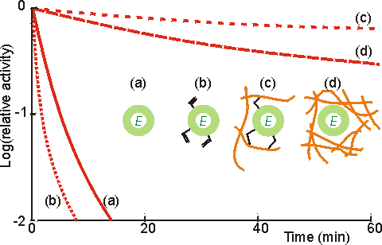
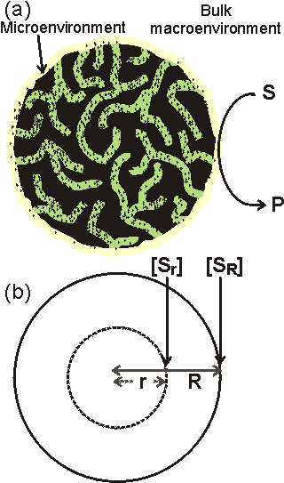

Enzyme Technology
Kinetics of immobilised enzymes
The kinetic behaviour of a bound enzyme can differ
significantly from that of the same enzyme in free solution. The properties of
an enzyme can be modified by suitable choice of the immobilisation protocol,
whereas the same method may have appreciably different effects on different
enzymes. These changes may be due to conformational alterations within the
enzyme due to the immobilisation procedure, or the presence and nature of the
immobilisation support.
Immobilisation can greatly effect the stability of an
enzyme. If the immobilisation process introduces any strain into the enzyme,
this is likely to encourage the inactivation of the enzymes under denaturing
conditions (e.g., higher temperatures or extremes of pH). However where there is
an unstrained multipoint binding between the enzyme and the support, substantial
stabilisation may occur (Figure 3.5). This is primarily due to the physical
prevention of the large conformational changes within the protein structure
which generally precede its inactivation. Many successful covalent
immobilisation processes involve an initial freely-reversible stage, where the
covalent links are allowed to form, break and re-form until an unstrained
covalently-linked structure is created, in order to stabilise the resultant
immobilised enzyme. Additional stabilisation is derived by preventing the enzyme
molecules from interacting with each other, and the protection that
immobilisation affords towards proteolytic and microbiological attack. This
latter effect is due to a combination of diffusional difficulties and the
camouflage to enzymic attack produced by the structural alterations. In order to
achieve maximum stabilisation of the enzymes, the surfaces of the enzyme and
support should be complementary with the formation of many unstrained covalent
or non-covalent interactions. Often, however, this factor must be balanced
against others, such as the cost of the process, the need for a specific support
material, and ensuring that the substrates are not sterically hindered from
diffusing to the active site of the immobilised enzyme in order to react at a
sufficient rate.

Figure 3.5. Illustration of the
use of multipoint interactions for the stabilisation of enzymes (Martinek et
al, 1977a,b). (a) ———
activity of free
underivatised chymotrypsin. (b)
········· activity of chymotrypsin derivatised with
acryloyl chloride. (c) -------- activity of acryloyl chymotrypsin copolymerised
within a polymethacrylate gel. Up to 12 residues are covalently bound per enzyme
molecule. Lower derivatisation leads to lower stabilisation. (d) -----
activity of chymotrypsin non-covalently entrapped within a polymethacrylate gel.
The degree of stabilisation is determined by strength of the gel, and hence the
number of non-covalent interactions. All reactions were performed at 60°C using low molecular weight artificial substrates. The immobilised
chymotrypsin preparations showed stabilisation of up to 100,000 fold, most of
which is due to their multipoint nature although the consequent prevention of
autolytic loss of enzyme activity must be a significant contributory factor.
The kinetic
constants (e.g., Km, Vmax) of enzymes may be altered by the
process of immobilisation due to internal structural changes and restricted
access to the active site. Thus, the intrinsic specificity
(k./Km) of such enzymes may well be changed relative to
the soluble enzyme. An example of this involves trypsin where the freely soluble
enzyme hydrolyses fifteen peptide bonds in the protein pepsinogen but the
immobilised enzyme hydrolyses only ten. The apparent value of these kinetic
parameters, when determined experimentally, may differ from the intrinsic
values. This may be due to changes in the properties of the solution in the
immediate vicinity of the immobilised enzyme, or the effects of molecular
diffusion within the local environment (Figure 3.6). The relationship between
these parameters is shown below.
Intrinsic parameters of the soluble
enzyme
Intrinsic parameters of the immobilised enzyme
Apparent parameters due to partition and diffusion

Figure 3.6. A schematic cross-section of an immobilised
enzyme particle (a) shows the macroenvironment and microenvironment. triangular
dots represent the enzyme molecules. The microenvironment
consists of the internal solution plus that part of the surrounding solution
which is influenced by the surface characteristics of the immobilised enzyme.
Partitioning of substances will occur between these two environments. Substrate
molecules (S) must diffuse through the surrounding layer (external transport) in
order to reach the catalytic surface and be converted to product (P). In order
for all the enzyme to be utilised, substrate must also diffuse within the pores
in the surface of the immobilised enzyme particle (internal transport). The
porosity (e) of the particle is the ratio of the volume of solution
contained within the particle to the total volume of the particle. The
tortuosity (t) is the average ratio of the path length, via the pores,
between any points within the particle to their absolute distance apart. The
tortuosity, which is always greater than or equal to unity, clearly depends on
the pore geometry. The diagram exaggerates dimensions for the purpose of
clarity. Typically, the diameter of enzyme molecules (2 - 10 nm) are 1 - 2
decades smaller than the pore diameters which are 2 - 4 decades smaller than the
particle diameters (10 - 2000 mm); the microenvironment consisting of a
diffusion layer (≈ 10 mm thick) and a thinner partition layer
(≈ 20 nm thick). (b) The concentration of the substrate at the surface
of the particles (radius R) is [SR] whereas the internal concentration
at any smaller radius (r) is the lower value represented by [Sr].
Home
| Back | Next
This page was established in 2004 and last updated by Martin
Chaplin
on
6 August, 2014
|